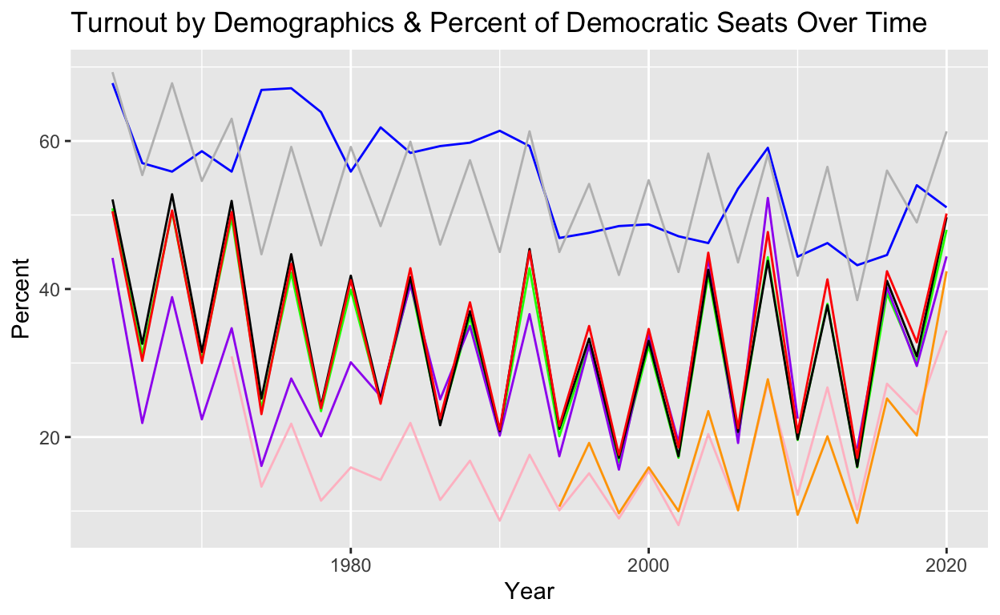
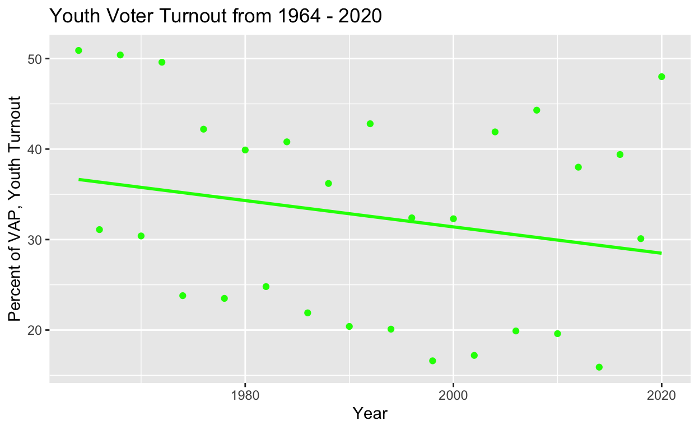
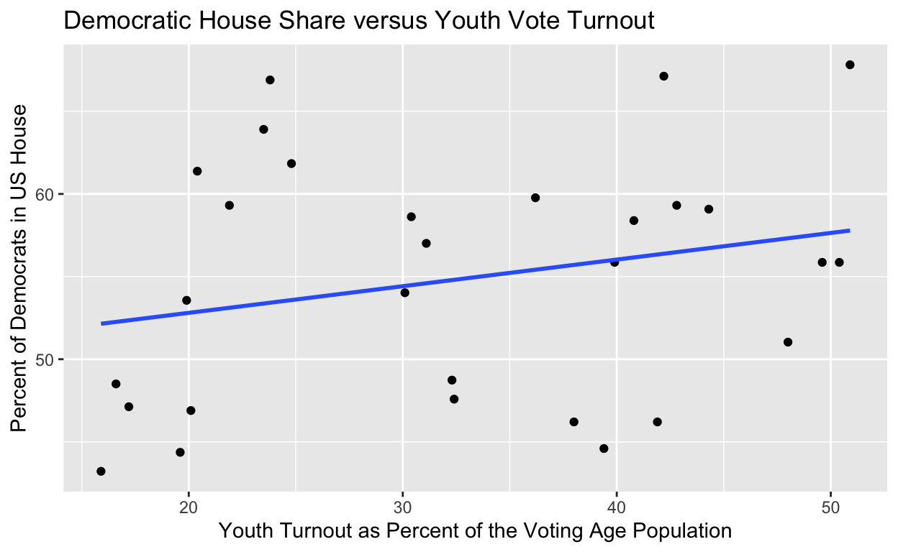
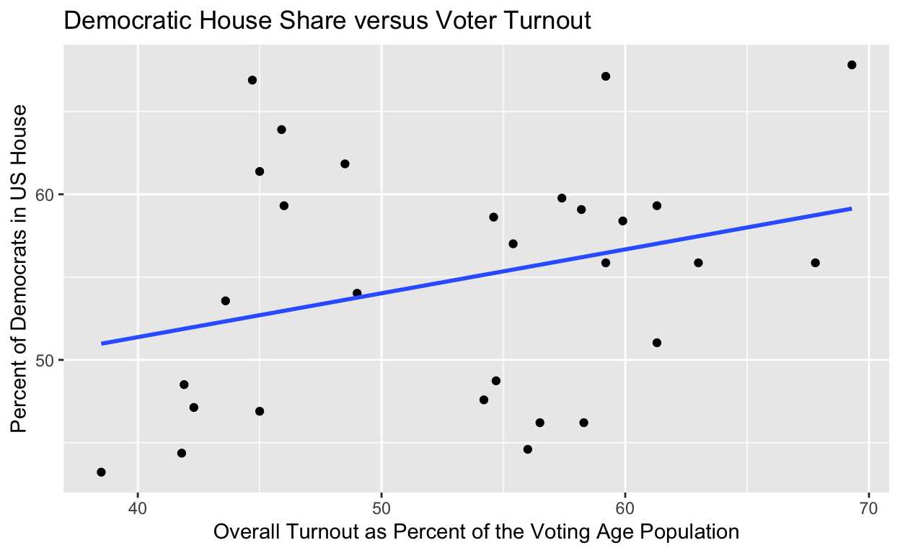
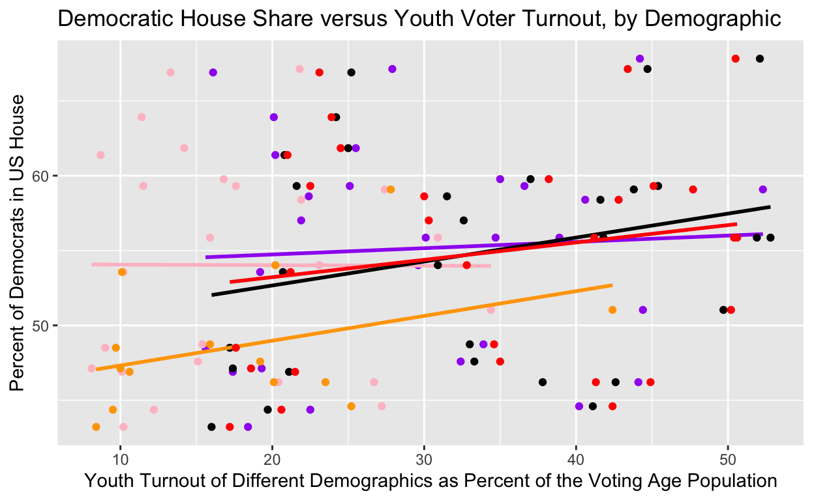

I. Introduction
The idea of the “youth vote” has captivated much of contemporary American political national discourse surrounding democratic elections and their impacts in the United States. In this most recent midterm election, young voters are accredited for stopping the so-called “red wave” that predicted large gains for the Republican party. Tufts Tisch School’s Center for Information and Research reports that the average turnout rate for young voters was approximately 27 percent, and on average, about 62 percent of those voters supported Democratic candidates running for the US House of Representatives. This statistic is in line with the popular political narrative that young voters are associated with more progressive or liberal outcomes compared to older voter demographics. Is this assumption upheld throughout American history?
In this project, I seek to answer the following: Over time, have higher rates of young voter turnout among the voting-age population had an effect on the partisan results of elections? I hope to examine the effects that increases or decreases have on electoral results, specifically looking at political party successes or losses. I also hypothesize that as the share of young voters in the population turning out to vote increases the more democratic or liberal electoral results will be. Conversely, I expect that as the rate of youth voter turnout decreases that the country will experience more conservative shifts in electoral results. In order to measure this I will analyze data from the United States Census Bureau measuring rates of voter turnout and registration from 1964-2020 as well as data from the clerk at the US House of Representatives showing the proportion of Democrats to Republicans in this same period. I have taken this data and created separate sets of data varying across demographics that are able to work in R as opposed to their original raw data as made available through these sources. My explanatory variable of interest therefore will be rates of voter turnout among voters aged 18-29 in the US from 1964-2020 and perhaps even changes in rates of voter turnout among this group. The outcome variable of interest will be the percentage of Democrats in Congress in a given year. Thus if larger shares of Democrats in Congress are measured during times of increasing rates of young voter turnout as modeled by a positive coefficient from running a regression, this observance would support my thesis. On the other hand, if I run a regression and find that the opposite is true, that larger shares of young voters mobilizing in an election were associated with higher shares of Republicans being elected this would quite clearly disprove my hypothesis. The more realistic scenario that would fail to prove my hypothesis is if when if I run a regression and there is no association, and, or weak association between youth voter turnout and shares of Democrats in Congress.
- Data
My project will follow an observational study research design— the nature of the question compels me to use already existing data and to measure the impact of turnout on elections in general throughout US history. I preferred this approach to examining the effects of youth turnout in one election due to external factors or confounders such as unprecedented events or historical trends in a given year. For example, overall turnout in 2020 reached an all time high in the last 100 years perhaps attributed to the highly contentious race between Donald Trump and Joe Biden, Trump being an unprecedented candidate given his background as a TV reality star, controversial agenda, and management of the COVID-19 pandemic. Given examples like this in given elections, I wanted to approach my research in a way that would minimize the impacts of those outlying examples and result in a more generalizable conclusion. This was best facilitated through an observational study where I run regressions on the relationship between turnout rates over time and the percentage of seats in the US House of Representatives held by Democrats. The following four visualtions are models to help summarize the data which we are analyzing from the Census Bureau, showing over all turnout, youth turnout, and youth turnout broken down across demographics, coded by color: Black Youth Turnout (purple), White Youth Turnout(black), Asian Turnout(orange), Hispanic Turnout(pink), and Female Turnout(red). In the first graph, the blue line demonstrates the percentage of democratic seats in the House over time, while grey denotes the measure of overall turnout as a percentage of the voting age population.

Overall trends in voter turnout, while heavily oscillating between elections, seems to trend down over time and it seems that youth racial/gender differentiations for the most part seem to follow each other through time. The second graph underneath depicts further data exploration with the Democratic seat share in Congress showing the percent change in seat share over time. This linear model also seems to trend down.



The next two graphs solely examine overall turnout among the voting age population and youth voter turnout from the available data between 1964-2020. While reflected in the top graph, specifically these models leverage a linear model to further support the historical downward trend in turnout in both of these groups. This may be explained by national climate regarding politics becoming more apathetic, or perhaps this is reflective of the expansion of voting rights or both— as suffrage is expanded to more groups the overall voting age population increases. Therefore if approximately the same number of individuals within the Voting Age Population continue to turnout but the overall denominator of this fraction increase, there is a negative relationship causing overall rates to reflect in this doward trend. That being said, this project does not intend to study the motivations of those getting out to vote. The main takeaway from these visualizations for the scope of this project is that undeniably, rates of turnout over time have a downward trend.
- Results
Youth Turnout Analysis

| term | estimate |
|---|---|
| (Intercept) | 651.18 |
| PercentVAP_YTO | 0.06 |
Election Year |
-0.30 |
The linear model shows a positive relationship between the percentage of youth turnout and the percentage of seats held by Democrats. The youth turnout coefficient indicates that, on average, it is predicted that, holding Election Year constant, there is a 0.06 or about 6 percent increase in the percentage of seats held by Democrats in that election year. This result is consistent with my hypothesis suggesting that increases or higher rates of youth voter turnout is associated with more Democratic seats held in Congress. That being said, this result cannot be held as causal or statistically significant. The p value of this measurement is about 0.5. P values should be much closer to zero, and this P value does not enable us to reject the null hypothesis, that there is no effect of youth turnout on Democratic seat shares.
Please refer to Item A in the Appendix section to see the entire statistical summary of the regression.
Overall Turnout Analysis

| term | estimate |
|---|---|
| (Intercept) | 652.20 |
| PercentVAP_ALL | 0.05 |
Election Year |
-0.30 |
The linear model shows a positive relationship between the percentage of overall turnout and the percentage of seats held by Democrats. The overall turnout coefficient indicates that, on average, it is predicted that, holding Election Year constant, there is a 0.05 or about 5 percent increase in the percentage of seats held by Democrats in that election year. There is seemingly an association between higher turnout and more seats held by Democrats.
Technically, this coefficient is slightly smaller than the 6 percent figure specifically looking at youth turnout. Though, overall, this result does not detract or support my hypothesis. This result again cannot be held as causal or statistically significant. The p value of this measurement is about 0.7. P values should be much closer to zero, and this P value does not enable us to reject the null hypothesis in this scenario, that there is no turnout on Democratic seat shares. In fact this p value is slightly larger than that of the youth turnout coefficient, meaning there is slightly more significance in that variables impact on Democratic seat shares. However, neither can be seen as significant or causal.
Please refer to Item B in the Appendix section to see the entire statistical summary of the linear model related to overall turnout.
Youth Demographic Breakdown

This model depicts the relationship between different youth demographics, Black (Purple), Hispanic(Pink), Asian (Orange), White(Black), and Female(red), differentiated by the color indicated in each corresponding parentheses. Again, overall this model shows, a positive association with increases with each demographic of young voters.Some lines are steeper than others, but there are no lines indicating negative associations— thus far this loosely supports my assertion. However, analysis on each demographic is required to understanding the statistical significance behind these relationships. Each demographic has a corresponding item listed in the appendix section summarizing the relationship, including the p values for each relation. Please refer to the appendix to refer to the entire summary regarding each regression.
| term | estimate |
|---|---|
| (Intercept) | 668.33 |
| PercentVAP_BTO | 0.10 |
Election Year |
-0.31 |
A. Black Turnout Regression Model
The linear model shows a positive relationship between the percentage of youth Black turnout and the percentage of seats held by Democrats. The overall turnout coefficient indicates that, on average, it is predicted that, holding Election Year constant, there is a 0.10 or about 10 percent increase in the percentage of seats held by Democrats in that election year with a unit increase in Black youth turnout. This indicates a positive association between these two variables, however, the p value for this relationship is approximately 0.34. This p-value is still too high to deem the relationship as causal or statistically significant. Please refer to Item C in the appendix to view the whole summary generated for the linear relationship between Black youth turnout and Democratic seat share.
| term | estimate |
|---|---|
| (Intercept) | 819.81 |
| PercentVAP_HTO | 0.17 |
Election Year |
-0.39 |
B. Hispanic Youth Turnout Regression Model
The linear model for Hispanic Youth Voter Turnout shows a positive relationship between the percentage of youth Hispanic turnout and the percentage of seats held by Democrats. This coefficient indicates that, on average, it is predicted that, holding Election Year constant, given a unit increase in Hispanic youth turnout there is a 0.17 or about 17 percent increase in the percentage of seats held by Democrats in that election year. This indicates a positive association between these two variables, and one higher than overall turnout, general youth turnout, and black youth turnout. That being said, however, the p value for this relationship is approximately 0.261. While being the lowest p-value of all relationships analyzed in this project, this p-value is once again still too high to deem the relationship as causal or statistically significant. Please refer to Item D in the appendix to view the whole summary generated for the linear relationship between Hispanic youth turnout and Democratic seat share.
| term | estimate |
|---|---|
| (Intercept) | 173.31 |
| PercentVAP_ATO | 0.19 |
Election Year |
-0.06 |
C. Asian Youth Turnout Regression Model
The linear model depicting Asian Youth Turnout shows a positive relationship between the turnout of young Asian voters, and the percentage of seats held by Democrats. The turnout coefficient for young Asians indicates that, on average, it is predicted that, holding Election Year constant, there is a 0.19 or about 19 percent increase in the percentage of seats held by Democrats in that election year, with a unit increase in Asian youth turnout. This indicates a positive association between these Asian youth turnout and Democratic seat share, whos value is slightly larger than Hispanic youth voter turnout and all other measures of turnout in this project. However, the p value for this relationship is approximately 0.535. Once again, this p-value is too high to deem the relationship as causal or statistically significant. Please refer to Item F in the appendix to view the whole summary generated for the linear relationship between Asian youth turnout and Democratic seat share.
| term | estimate |
|---|---|
| (Intercept) | 650.78 |
| PercentVAP_WTO | 0.06 |
Election Year |
-0.30 |
D. White Youth Turnout Regressional Model
This regression depicts White youth turnout, again showing a positive relationship between young white turnout and Democratic seat share. The turnout coefficient for young white voters indicates that, on average, it is predicted that, holding Election Year constant, with a unit increase in white youth turnout there is a 0.06 or about 6 percent increase in the percentage of seats held by Democrats in that election year. However, the p value for this relationship is approximately 0.535. This p-value is too large to deem the relationship as causal or statistically significant. Please refer to Item E in the appendix to view the whole summary generated for the linear relationship between white youth turnout and Democratic seat share.
| term | estimate |
|---|---|
| (Intercept) | 658.80 |
| PercentVAP_FTO | 0.06 |
Election Year |
-0.30 |
E. Female Youth Turnout Regression Model
This regression depicts Female youth turnout. The model demonstrates a positive relationship between young female turnout and the percentage of Democratic seat share in Congress. The turnout coefficient for young female voters indicates that, on average, it is predicted that, holding Election Year constant, there is a 0.06 or about 6 percent increase in the percentage of seats held by Democrats in that election year, when there is an increase in female youth turnout. However, the p value for this relationship is approximately 0.535. This p-value is too large to deem the relationship as causal or statistically significant. Please refer to Item G in the appendix to view the whole summary generated for the linear relationship between Female youth turnout and Democratic seat share.
- Conclusions, Discussion, & Limitations
To best summarize my findings, I compare voter turnout overall, youth turnout, and youth turnout broken down by demographic: Black, Hispanic, Asian, White and Female young voters to percentage of seats held by Democrats in the US House of Representatives. In all linear models and graphs studied in this project, every element shows a positive association in higher youth turnout and and Democratic seat share. This loosely supports my assertion that there is a potivie relationship between higher youth turnout and Democratic seats in Congress. However, this cannot be interpreted as a causal relationship. Youth turnout had a slightly larger coefficient than overall turnout in relation to percentage of Democratic seats, however we cannot deem youth turnout as uniquely causal as overall turnout in general showed a positive association with Democratic seat share, all demographics demonstrated a positive association as well and the p values for all of these elements were far too high to consider any relationship as causal. None of the p values viewed as statistically significant, despite some being lower than others— the p values were all well above 0.05, the highest a p value can be to consider a relationship statistically significant and to be able to reject a null hypothesis.
Thus my main conclusion is that the data does not support my hypothesis that there is a causal relationship between high youth turnout and Democratic seat share, nor am I able to reject the null hypothesis that youth turnout had no impact on Democratic seat share.
Additionally, the study is uable to control for confounding— such as variances between states. State election laws determine election administration throughout the country. Large disparities in access to the ballot as well as state cultures surrounding civic participation and engagement may have larger impact on the results of elections in each state not to mention the current national or state discourse on current issues and events, such as the large surge in political discourse in 2016, 2018, and 2020 paralleling the national climate responsing to the controversial leadership of Donald Trump as well as other wordly events. Furthermore, at the state level, youth voter turnout may be more impactful in some states than others which may not be reflected in the design of this research project.
The design of this approach was meant to measure national trends in turnout and partisan control in Congress. While the data provided much opportunity to explore my research question within these parameters, the data and approach came with other limitations. First and foremost, the Census Bureau has changed the way in which it records and qualifies race throughout time, for example, much data before 2000 did not diffrentiate White non-hispanics from the population, meaning there could be overlap between turnout rates between White americans and Hispanic- White Americans. Also data for Asian American turnout before the 90s simply did not exist, thus making the sample for Asian American Youth Turnout over time much smaller a difficult to compare to other demographics. Additionally due to the scope of this project I was unable to be exhaustive in measuring all demographics turnout comprehensively, and the data sheet I was working with from the Census Bureau shows demographic breakdown within the context of youth turnout. Constrained by this scope, my project does not examine the overall impacts of racial turnout regardless of age. Additionally, this is complicated by this specific data’s definition of young voters being 18-24 compared to the standard parameters of 18-29, making me hesitant to try to fill in data gaps regarding overall turnout from other data sets— I felt the best decision to maintain continuity in the same data set as the environment or method of collecting data would remain constant within this specific data sheet. The data also only spans the years of 1964-2020 for which data on youth voter turnout was readily accessible from the Census Bureau. As aforementioned, my project cannot account for confounding variables such unprecedented events shaping national discourse, state voting laws, disparities, election administration, candidate’s campaign strategy, etc. which may very well have a significant impact on turnout overall, partisan preferences, or election to office.
This study might also be improved by examining youth turnout in specific states across time and measuring if democrats were elected to a single office statewide such as a Governor’s seat, a US Senate seat, ect. in order to control for factors such as election administration differences and variances in state cultures relating to civic engagement. This may be slightly altered by replacing the percentage of democratic seat shares in US Congress with seat shares in the corresponding state legislature as opposed to examining a binary on a single office’s election. Alternatively, perhaps this study would be best understood in the conext of one election year and measuring percent change of Democrats in Congress. All in all, different and perhaps more effective approaches could include state by state analyses, or an analysis taking the scope of one election.
Although this study was unable to support my hypothesis regarding youth turnout and increased numbers of Democrats in Congress, I am still optimistic about the positive associations between turnout and Democratic seat share and honored to have contribute to this discussion in mobilization strategy. It is important to continue to explore ways to engage young voters and new voters across the country.
V. References
Bureau, US Census. “Historical Reported Voting Rates.” Census.gov, 26 Oct. 2021, https://www.census.gov/data/tables/time-series/demo/voting-and-registration/voting-historical-time-series.html.
“Party Divisions of the House of Representatives, 1789 to Present: US House of Representatives: History, Art & Archives.” Party Divisions | US House of Representatives: History, Art & Archives, https://history.house.gov/Institution/Party-Divisions/Party-Divisions/.
Kevin Schaul, Kate Rabinowitz. “2020 Turnout Is the Highest in over a Century.” The Washington Post, WP Company, 8 Dec. 2020, https://www.washingtonpost.com/graphics/2020/elections/voter-turnout/.
“Millions of Youth Cast Ballots, Decide Key 2022 Races.” Circle at Tufts, 9 Nov. 2022, https://circle.tufts.edu/latest-research/millions-youth-cast-ballots-decide-key-2022-races.
- Appendix
Call:
lm(formula = percent_dems ~ PercentVAP_YTO + `Election Year`,
data = data)
Residuals:
Min 1Q Median 3Q Max
-7.275 -3.980 -2.686 3.850 8.334
Coefficients:
Estimate Std. Error t value Pr(>|t|)
(Intercept) 651.17603 121.09121 5.378 1.24e-05 ***
PercentVAP_YTO 0.06148 0.09125 0.674 0.506
`Election Year` -0.30037 0.06044 -4.970 3.64e-05 ***
---
Signif. codes: 0 '***' 0.001 '**' 0.01 '*' 0.05 '.' 0.1 ' ' 1
Residual standard error: 5.313 on 26 degrees of freedom
Multiple R-squared: 0.5183, Adjusted R-squared: 0.4812
F-statistic: 13.99 on 2 and 26 DF, p-value: 7.519e-05Item A, Summary of Youth Turnout Regression
Call:
lm(formula = percent_dems ~ PercentVAP_ALL + `Election Year`,
data = data)
Residuals:
Min 1Q Median 3Q Max
-6.953 -4.302 -2.764 4.211 8.824
Coefficients:
Estimate Std. Error t value Pr(>|t|)
(Intercept) 652.19637 128.97464 5.057 2.89e-05 ***
PercentVAP_ALL 0.04715 0.12947 0.364 0.719
`Election Year` -0.30114 0.06344 -4.747 6.56e-05 ***
---
Signif. codes: 0 '***' 0.001 '**' 0.01 '*' 0.05 '.' 0.1 ' ' 1
Residual standard error: 5.346 on 26 degrees of freedom
Multiple R-squared: 0.5124, Adjusted R-squared: 0.4749
F-statistic: 13.66 on 2 and 26 DF, p-value: 8.813e-05Item B, Summary of Overall Turnout Regression
Call:
lm(formula = percent_dems ~ PercentVAP_BTO + `Election Year`,
data = data)
Residuals:
Min 1Q Median 3Q Max
-7.397 -4.170 -1.241 4.056 7.736
Coefficients:
Estimate Std. Error t value Pr(>|t|)
(Intercept) 668.33078 121.60787 5.496 1.04e-05 ***
PercentVAP_BTO 0.09835 0.10056 0.978 0.337
`Election Year` -0.30940 0.06122 -5.054 3.24e-05 ***
---
Signif. codes: 0 '***' 0.001 '**' 0.01 '*' 0.05 '.' 0.1 ' ' 1
Residual standard error: 5.341 on 25 degrees of freedom
(1 observation deleted due to missingness)
Multiple R-squared: 0.5071, Adjusted R-squared: 0.4677
F-statistic: 12.86 on 2 and 25 DF, p-value: 0.0001443Item C, Summary Youth Black TO Model
Call:
lm(formula = percent_dems ~ PercentVAP_HTO + `Election Year`,
data = data)
Residuals:
Min 1Q Median 3Q Max
-9.658 -3.422 -1.018 3.928 8.003
Coefficients:
Estimate Std. Error t value Pr(>|t|)
(Intercept) 819.8055 146.1711 5.609 1.22e-05 ***
PercentVAP_HTO 0.1656 0.1436 1.153 0.261
`Election Year` -0.3851 0.0735 -5.239 2.96e-05 ***
---
Signif. codes: 0 '***' 0.001 '**' 0.01 '*' 0.05 '.' 0.1 ' ' 1
Residual standard error: 5.165 on 22 degrees of freedom
(4 observations deleted due to missingness)
Multiple R-squared: 0.5551, Adjusted R-squared: 0.5147
F-statistic: 13.73 on 2 and 22 DF, p-value: 0.0001351Item D, Summary Youth Hispanic TO Model
Call:
lm(formula = percent_dems ~ PercentVAP_WTO + `Election Year`,
data = data)
Residuals:
Min 1Q Median 3Q Max
-7.238 -4.041 -2.701 3.822 8.482
Coefficients:
Estimate Std. Error t value Pr(>|t|)
(Intercept) 650.78137 121.90922 5.338 1.38e-05 ***
PercentVAP_WTO 0.05533 0.08799 0.629 0.535
`Election Year` -0.30010 0.06082 -4.934 4.00e-05 ***
---
Signif. codes: 0 '***' 0.001 '**' 0.01 '*' 0.05 '.' 0.1 ' ' 1
Residual standard error: 5.319 on 26 degrees of freedom
Multiple R-squared: 0.5172, Adjusted R-squared: 0.4801
F-statistic: 13.93 on 2 and 26 DF, p-value: 7.738e-05Item E, Summary Youth White TO Model
Call:
lm(formula = percent_dems ~ PercentVAP_WTO + `Election Year`,
data = data)
Residuals:
Min 1Q Median 3Q Max
-7.238 -4.041 -2.701 3.822 8.482
Coefficients:
Estimate Std. Error t value Pr(>|t|)
(Intercept) 650.78137 121.90922 5.338 1.38e-05 ***
PercentVAP_WTO 0.05533 0.08799 0.629 0.535
`Election Year` -0.30010 0.06082 -4.934 4.00e-05 ***
---
Signif. codes: 0 '***' 0.001 '**' 0.01 '*' 0.05 '.' 0.1 ' ' 1
Residual standard error: 5.319 on 26 degrees of freedom
Multiple R-squared: 0.5172, Adjusted R-squared: 0.4801
F-statistic: 13.93 on 2 and 26 DF, p-value: 7.738e-05Item F, Summary Youth Asian TO Model
Call:
lm(formula = percent_dems ~ PercentVAP_FTO + `Election Year`,
data = data)
Residuals:
Min 1Q Median 3Q Max
-7.216 -3.974 -2.681 3.844 8.333
Coefficients:
Estimate Std. Error t value Pr(>|t|)
(Intercept) 658.80061 119.00659 5.536 8.22e-06 ***
PercentVAP_FTO 0.05672 0.08701 0.652 0.52
`Election Year` -0.30416 0.05953 -5.110 2.52e-05 ***
---
Signif. codes: 0 '***' 0.001 '**' 0.01 '*' 0.05 '.' 0.1 ' ' 1
Residual standard error: 5.316 on 26 degrees of freedom
Multiple R-squared: 0.5178, Adjusted R-squared: 0.4807
F-statistic: 13.96 on 2 and 26 DF, p-value: 7.627e-05Item G, Summary Youth Female TO Model